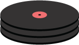
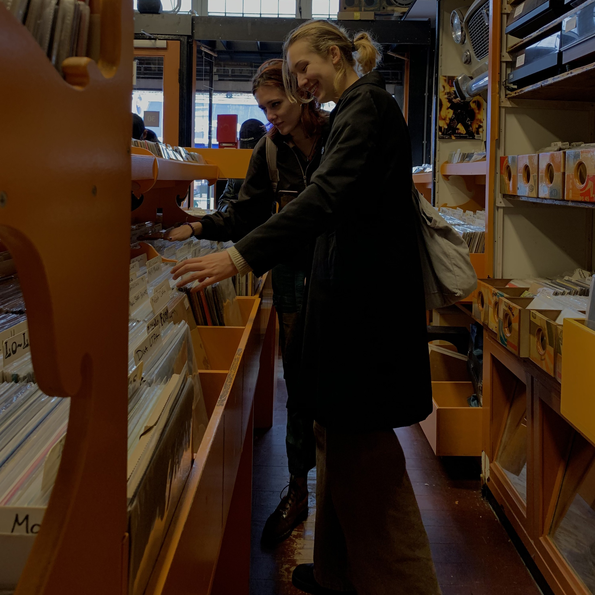

2e hands winkels
Record Mania
Amsterdam Ferdinand Bolstraat 30
Eerste en tweedehands LP's, CD's & Cassettes


Second Life Music
Amsterdam Prinsengracht 366
Eerste en tweedehands LP's & CD's
Waarom niet nieuw?
Tweedehands muziek is de duurzaamste vorm van muziek. Voor de wereld en je portemonnee. Je hoeft de plaat of CD namelijk maar een keer te kopen om er voor altijd van te kunnen genieten. Door een plaat fysiek te spelen (op een platenspeler) gebruik je geen internet. Dit is duurzamer dan streamen, wat elke keer weer gebruik maakt van het internet.
Tweedehands winkelen is leuk!
